Ichinoseki
Ichinoseki · Iwate
Ichinoseki
Highlighted on the Iwate map.
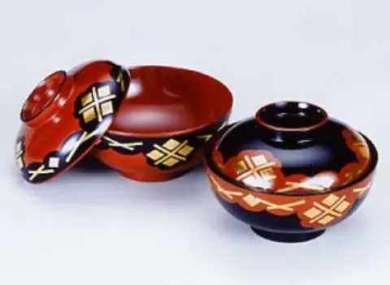
Stay
ベリーノホテル一関
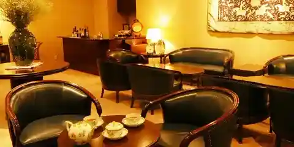
Beriinohoteru Ichinoseki
Hotel in Ichinoseki, Iwate.
ビジネスホテルＳＡＴＯＵ
Bijinesuhoteru S A T O U
Hotel in Ichinoseki, Iwate.
蔵ホテル一関
Kura Hoteru Ichinoseki
Hotel in Ichinoseki, Iwate.
一関グリーンホテル
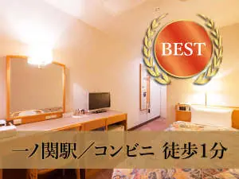
Ichinoseki Guriinhoteru
Hotel in Ichinoseki, Iwate.
ホテル松の薫一関
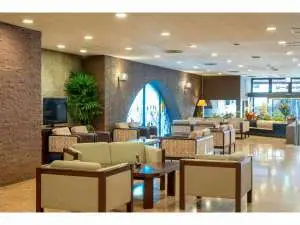
Hoteru Matsu No Kaoru Ichinoseki
Hotel in Ichinoseki, Iwate.
＠ビジネスホテル一関
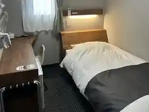
@ Bijinesuhoteru Ichinoseki
Hotel in Ichinoseki, Iwate.
一関温泉 山桜桃の湯
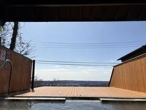
Ichinoseki Onsen Yamazakura Momo No Yu
Onsen lodging in Ichinoseki, Iwate.
Dining
喜の川
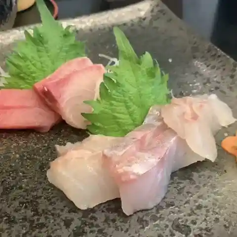
Yorokono Kawa
Japanese restaurant in Ichinoseki, Iwate.
郭公屋
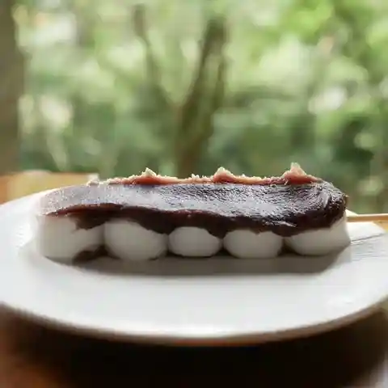
Kakkou Ya
Japanese sweets shop in Ichinoseki, Iwate.
丸長
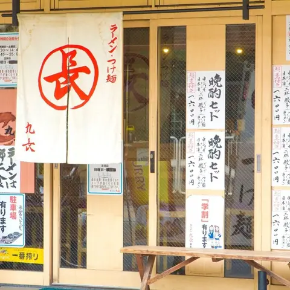
Maru Chou
Ramen shop in Ichinoseki, Iwate.
あさひや
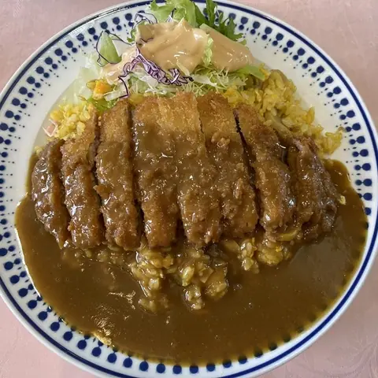
Asahiya
Yoshoku (Western-style) restaurant in Ichinoseki, Iwate.
食事処 居酒屋 こまつ
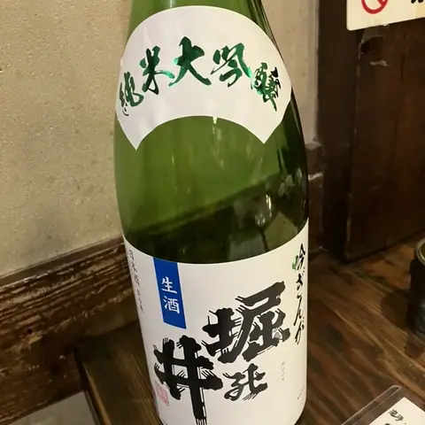
Shokuji Tokoro Izakaya Komatsu
Izakaya in Ichinoseki, Iwate.
UMAMI SOUP Noodles 虹ソラ
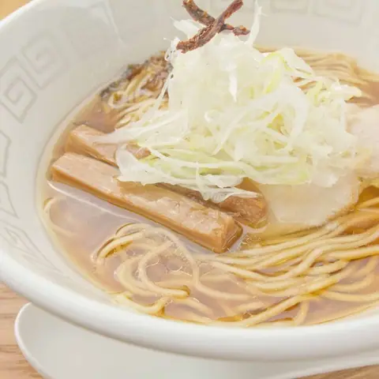
Umami Soup Noodles Niji Sora
Ramen shop in Ichinoseki, Iwate.
富澤
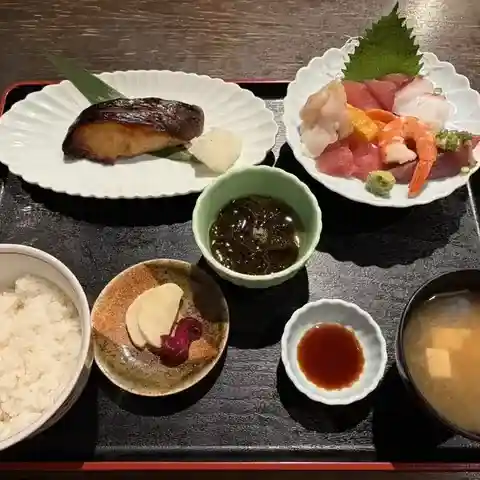
Tomizawa
Seafood restaurant in Ichinoseki, Iwate.
和風レストラン 松竹
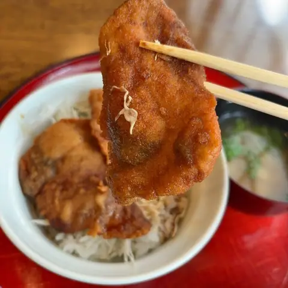
Wafuu Resutoran Shouchiku
Katsudon restaurant in Ichinoseki, Iwate.
蔵元レストラン せきのいち
Kuramoto Resutoran Sekinoichi
Local-cuisine restaurant in Ichinoseki, Iwate.
青葉 直利庵
Aoba Naotoshi Iori
Soba restaurant in Ichinoseki, Iwate.
大福屋
Daifuku Ya
Japanese sweets café in Ichinoseki, Iwate.
三彩館ふじせい
Sansai Kan Fujisei
Local-cuisine restaurant in Ichinoseki, Iwate.
ポラーノ
Poraano
Gelato and ice-cream shop in Ichinoseki, Iwate.
ミートレストラン 格之進
Miitoresutoran Kakunoshin
Hamburg-steak restaurant in Ichinoseki, Iwate.
菜のはな
Na Nohana
Standing soba counter in Ichinoseki, Iwate.
庵どう
Iori Dou
Soba restaurant in Ichinoseki, Iwate.
小角食堂
Kosumi Shokudou
Katsudon restaurant in Ichinoseki, Iwate.
丑舎 格之進 総本店
Ushi Sha Kakunoshin Souhonten
Yakiniku (grilled meat) restaurant in Ichinoseki, Iwate.
ペッタンくん
Pettan Kun
Local-cuisine restaurant in Ichinoseki, Iwate.
とんちゃん
Tonchan
Yakiniku (grilled meat) restaurant in Ichinoseki, Iwate.
中村
Nakamura
Chinese restaurant in Ichinoseki, Iwate.
やきとり山平
Yakitori Yamahira
Yakitori restaurant in Ichinoseki, Iwate.
caffe ComeSta
Caffe Comesta
Café in Ichinoseki, Iwate.
山海
Sankai
Izakaya in Ichinoseki, Iwate.
Sights
Minamiiwate Country Club
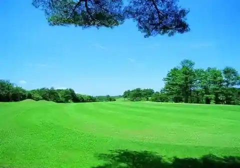
A tough and unique golf course that drives the golfer's desire to conquer.
Farmhouse Restaurant Yumemiru Otome no Yakata
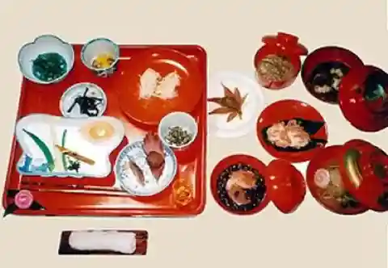
Farmhouse Restaurant Yumeru Otome no Yakata
Farmhouse Restaurant Nukumori
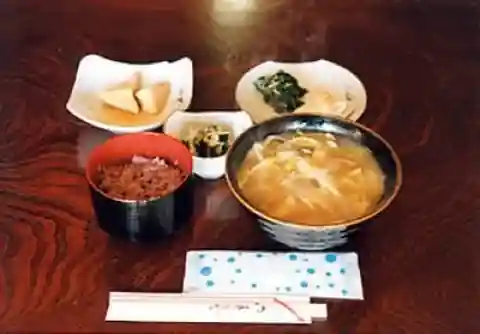
A restaurant that serves "Kanibutto", a local dish from Kawasaki, Ichinoseki City.
Aijo Apple Orchard
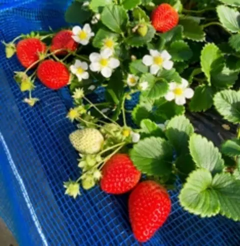
This apple orchard offers a view of Tategamori Farm from its vast grounds.
Mochi Cuisine
In the Ichinoseki region, which is a rich rice-growing region, rice cakes have traditionally been used not only for ceremonial occasions, but also to mark off farm work, to entertain guests, or even just because it's cold.
Kawasaki Cherry-Picking Orchard
Five varieties are planted in the three greenhouses: Beni Yutaka, Beni Kirari, Sato Nishiki, Beni Shuho, and Beni Temari, each with a different taste.
Kawasaki no Saku (Local Sweet)
"Kawasaki no Saku" is a popular product from the long-established confectionery shop "Kashi Senka Takizawa" in Kawasaki-cho, Ichinoseki City.
Yamabuki Castle Ruins
This is the residence of the Ohara Chiba clan, one of the Seven Kasai Horsemen, and one of the Higashiyama Hatashira.
Genbikei Gorge
Kurikoma, is a scenic beauty and a natural monument. Iwai River, which flows from its source at Mt.
Geibikei Gorge
It is an approximately 2 km long gorge created by the Satetsu River eroding limestone, with approximately 100 m cliffs rising on both banks.